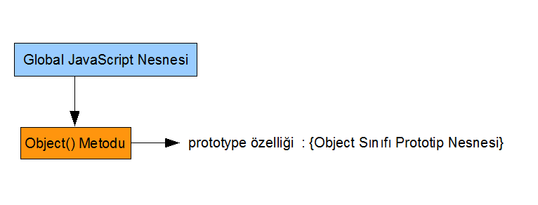

JavaScript Temelleri
Bölüm 3
Global JavaScript Nesnesi
Bölüm 3 Sayfa 3
3.4 - JavaScript Nesne Teknolojisi ve Hiyerarşisi .
Bu kısımda, JavaScript programlama dilinde nesnelerin yapısı düzenlenemesi ve kullanımı üzerinde bilgileri inceleyeceğiz. İlk olarak Global JavaScript Nesnesini daha yakından incelemekle başlayacağız. Global JavaScript Nesnesinin yapısını incelemiş olmamız bize bu konuda yardımcı olacaktır.
3.4.1 - Global JavaScript Nesnesi
Global JavaScript Nesnesi, JavaScript yorumlayıcısının tüm nesnelerinin atası olarak hareket eder. Aslında, teknik olarak tüm nesnelerin atası Object nesnesidir, fakat Global JavaScript Nesnesi açık olmayan bir şekilde, Object nesnesi dahil, tüm nesnelerin atası rolünü oynar ve özellikleri tüm nesnelere kalıtım yolu ile aktarılır. Global JavaScript Nesnesinin bir yapılandırıcı fonksiyonu yoktur ve kullanıcılar, bu nesnenin örneklerini yaratamazlar. Global JavaScript Nesnesinin bir prototipi yoktur ve yapısı yerleştirilme yöntemine bağlıdır. Global JavaScript Nesnesinin kendi ismi yoktur. Yerleştirildiği ortama göre isimlendirilir. JavaScript teknolojisinin en çok kullanıldığı yer, web belge çözümleyicileri olduğundan, bu ortamlarda yerleştirilme şekli ile, Global JavaScript Nesnesi, window nesnesi adını alır. Her ticari kurumun kendine özgü bir window nesnesi vardır, fakat bildiğimiz gibi çekirdek JavaScript öğeleri standart hale gelmiştir. JavaScript nesne teknoljisi son derece dinamiktir ve nesne özelliklerine her zaman katkı yapılabilmesine olanak sağlar. Her belge çözümleyicisi kendi window nesnesini yerleştirirken, standart olan çekirdek özellikler yanında kendi öntanımlı özelliklerini de Global JavaScript Nesnesinin öntanımlı özelliklerine ekler. Bu eklenecek olan özelliklere artık yeni bir standart olan W3C-DOM nesneleri de desteklendiği kadarı ile eklenir. Sonunda Global JavaScript Nesnesi, yerleştiği ortama göre çeşitli ve farklı öntanımlı özelliklere sahip olarak kullanıcılara açılır. Fakat, yerleşimlerde, eğer ECMA-262 standartları destekleniyorsa, standart çekirdek nesneler, yerleşimde zorunlu olarak bulunur.
Global JavaScript Nesnesi kullanıcılara açılınca,
<script> </script>
arasında bulunan, <script> elementleri içeriğine program adımları yazarak katkıda bulunabilirler. Bu alanlara, üst düzey programlama alanı denilir ve üst düzey programlama alanına yazılan herşey anında çalışır. Üst düzey programlama alanında tanımlanan her değişken Global JavaScript Nesnesini günceller ve ona yeni bir özellik katar. Global JavaScript Nesnesinin tüm özellikleri gibi kullanıcı tanımlı özellikleri de globaldir ve tüm program öğeleri tarafından her taraftan ulaşılabilir. Örnek olarak bdelib.js kitaplık dosyasında bulunan global sonuçYaz() fonksiyonu, Global JavaScript Nesnesine kullanıcı eliyle eklenmiş bir metot anlamına gelir. Bu metot, Global JavaScript Nesnesinin yapısını günceller ve ona program öğelerinin her yönden ulaşabilecekleri yeni kullanıcı tanımlı metot kazandırır.
3.4.2 - Yapılandırıcı (Constructor) Fonksiyonlar
ECMA-262 standartları, her JavaScript yerleşiminde bulunması gereken öntanımlı öğeleri belirtmiştir. Bu standarda (artık standart olarak anılacaktır) uymayı kabul eden her JavaScript yerleşiminde standadın öngördüğü özellikler, standartta belirtilen tanımlarda olarak bulunacaktır. Bu öntanımlı öğelerden biri de, Object() metodudur.
Object() fonksiyonu, şekil 3.1-1 de görülen, çekirdek JavaScript öntanımlı nesnelerinden biri olan, Function nesne sınıfının bir örneğidir. Object() fonksiyonu, bir yapılandırıcı fonksiyondur. Yapılandırıcı fonksiyonların işlevi, isimleri ile belirtilen nesne sınıf örneklerinin yapılarını, güncel verilere göre belirlemektir. Object() yapılandırıcı fonksiyonunun işlevlerinden biri, öntanımlı Object sınıfı nesnesi örneklerinin yapılarını, güncel verilere göre belirlemektir. Object() yapılandırıcı fonksiyonunun, Object sınıf örnekleri ile tek ilişkisi budur. Object() yapılandırıcı fonksiyonunun, Object sınıf örneklerinin yapılandırmasını yapmaz, sadece var olan yapıyı okur. Object sınıf örneklerinin yapılandırmasını, kullanıcı tanımlı sınıflar dahil hepsini, kullanıcıya açık olmayan bir yöntemle JavaScript yorumlayıcısı gerçekleştirir. Kullanıcılar bu yapıları sadece güncelleştirebilir. Yapılandırıcı fonksiyonlar bu yapıların güncel değerlerini algılayarak, güncel yapıda yeni sınıf örnekleri yaratırlar.
Yapılandırıcı fonksiyonların, yapılandırdıkları sınıf örnekleri ile bir ilgisi olmadığı, yapılarından anlaşılabilir. Object() yapılandırıcı fonksiyonu, tüm fonksiyonlar gibi, Function öntanımlı nesnesinin bir örneğidir. Yapılandırdığı sınıf nesne örneği ise Object , öntanımlı sınıfının bir örneğidir. Bu ikisinin arasında bir ilişki olmayacağı varsayılabilir.
Bu varsayımın (hipotez) sınanması için, Object() yapılandırıcı fonksiyonuna yeni bir özellik ekleyerek, bu özelliğin yeni oluşturulacak, güncel yapıda Object sınıf örneklerine geçip geçmediğinin kontrol edilmesi yeterli olacaktır. Object() fonksiyonu bir fonksiyon nesnesi örneği olduğuna göre, buna yeni özellikler eklenmesi olanaklıdır. Bu konuda, ilişkilendirildiği bir uygulama sayfasında çalışan, aşağıdaki JavaScript programı, aşağıda görülmekte olan sonuçları vermektedir:
... Object.bilgi = 'kod 324'; çağrı = new Object(); sonuçYaz('çağrı.bilgi = ', çağrı.bilgi, 'b3.4.2-uyg-1-sonuç-1'); ...
Program Sonucu :
Program sonuçlarında açıkça görüldüğü gibi, varsayım doğrulanmaktadır. Yani, Object fonksiyon nesnesi örneğinin özelliğine yapılan bir katkı, Object sınıf örneklerininn yapısına yansımamaktadır. Bir sınıf örneğinin özellik listesine yapılacak katkı, ancak o nesne örneğini etkiler ve yeni özelliğe ancak o nesne örneği aracığı ile ulaşılabilir. Bu konuda bir uygulama sayfasında çalışan, aşağıdaki JavaScript programı bunu açıkça belirtmektedir:
... Object.bilgi = 'kod 324'; sonuçYaz('Object.bilgi = ', Object.bilgi, 'b3.4.2-uyg-2-sonuç-1'); ...
Program Sonucu :
Alınan bu sonuç, Object fonksiyon nesne örneğine yapılan özellik katkısının sadece bir tür global değişken olmaktan başka bir işlevi olmadığını belirtmektedir. Object fonksiyon nesne örneği, Global JavaScript Nesnesinin öntanımlı bir nesne örneğidir ve tüm özellikleri spesifikasyonda belirtilmiştir. Buna kullanıcılar tarafından spesifikasyon dışı eklentiler yapmak bir tür gizli global değişken kullanmak gibidir ve global değişken kullanmanın bütün kötülüklerini taşıdıktan başka, bir de gizli olması nedeni ile anlaşılması zordur. Bu tür global değişkenler, yazılan fonksiyonların taşınabilirliğini ve okunabilirliğini büyük ölçüde engeller ve programların ileride bakım için yeniden okunmalarını zorlaştırır. Bu nedenle, mutlaka gerekli olmadıkça, öntanımlı öğelerin yapılarına katkı yapılmamasında yarar bulunmaktadır.
Yapılandırıcı fonksiyonlara yeni özellikler ekleyerek sınıf nesnelerini etkileyemiyorsak, o zaman yapılarında yapacağımız değşikliklerle sınıfın örneklerini etkileyebileceğimiz sınıf nesneleri nerede ve bunlara nasıl ulaşabiliriz?
Bu soruya verilecek yanıt, JavaScript programlama dilinde, Java gibi adı belli sınıf nesneleri olmadığıdır. JavaScript programlama dilinde, sınıf nesneleri yapılandırıcı fonksiyonların prototip özelliklerinin değeri olarak düzenlenmiştir.
3.4.3 - Yapılandırıcı (Constructor) Fonksiyonların Prototip (prototype) Özellikleri
JavaScript programlama dilinde, yapılandırıcı fonksiyonların bir prototype özelliği bulunmaktadır. Bu özelliğin değeri, yapılandırıcı fonksiyonun örnekleri yapılandırdığı nesne türündendir. Yine Object() yapılandırıcı fonksiyonu örnek alalım. Bu fonksiyonun prototype özelliğine, Object.prototype olarak ulaşılır. Bu bir nesne örneği özelliğidir ve değeri bir nesnedir. Bu nesne, Object() yapılandırıcı fonksiyonunun yapılandırdığı Object sınıfından bir nesnedir. Bu ismin yapılandırıcı fonksiyonun ismi olduğuna dikkat ediniz. JavaScript programlama dilinde, yapılandırıcı fonksiyonların (hatta tüm fonksiyonların yapılandırıcı fonksiyon olarak kullanılabildiği düşünülürse tüm fonksiyonların) prototype özellikleri JavaScript yorumlayıcısı tarafından düzenlenir. Buna kullanıcının sadece yeni özellikler eklemek şeklinde bir katkısı olabilir.
Bir Javascript sınıf nesnesinin (bir sınıf nesnesi yapılandırıcı fonksiyonun prototype özelliğinin) konumu, aşağıdaki şemadan daha kolay anlaşılabilecektir.

Şekil 3.4.3-1 Object.prototype Özelliğinin değeri
Şekil 3.4.3-1 den de görüldüğü gibi, JavaScript programlama dilinde, Object sınıf nesnesi yoktur. Object sınıfından nesne örneklerinin yapılarınin envanteri, bir tür veri temeli olan Object.prototype nesnesinin içeriğinde tutulur.
Object sınıfından nesne örneklerinin yapılarınin envanteri, bir tür veri temeli olan Object.prototype nesnesinin içeriği de bir Object nesnesidir. JavaScript yorumlayıcısı, bu nesnesin içsel [[Class]] özelliğini, "Object" olarak algılamaktadır. Bu içeriğe Object nesne sınıfının prototipi adı da verilir. Buradan da görülebildiği gibi, JavaScript programlama dili sınıf değil prototip temeline göre düzenlenmiştir.
JavaScript programlama dilinde, başka programlama dillerinden gelen alışkanlıklarla sınıf nesnelerinden bahsedilir. Bu tanım genelde doğru değildir. JavaScript programlama dilinde, örnek olarak Object sınıf nesnesi değil, Object sınıfının prototipi söz konusudur.
Öntanımlı sınıf prototiplerinin yazılımı kullanıcıya kapalıdır. Bu yazılıma erişim istekleri aşağıda görülen JavaScript programının ilişikli olduğu uygulama sayfasında görüldüğü gibi sonuç verir.
...
sonuçYaz('Object.prototype = ', 'Object.prototype', 'b3.4.3-uyg-1-sonuç-1');
...
Program Sonucu :
Program sonucu, kulllanıcıya kapalı olduğu için, prototip nesnesinin yazılımını vermemekte, fakat iki önemli bilgi vermektedir. Bunlardan ilki, prototip nesnesinin veri tipi olan object değeridir. Bu veri tipi, typeof() işlemcisi ile de alınabilecek olan veri itpi sonucudur ve tüm nesne tipi veriler için aynıdır. İkinci değer olan Object daha özel bir değerdir ve JavaScript yorumlayıcısının nesneyi algıladığı [[Class]] tipidir. Bu tip, Global JavaScript Nesnesinin öntanımlı yapılandırıcı fonksiyonlarından birinin adı olabilir. Burada Object sonucunun alınmasının nedeni, Object nesne sınıfının prototipinin yine bir Object nesnesi olmasıdır.
Öntanımlı nesne sınıflarının prototiplerinin yazılımı kullanıcıya kapalıdır, fakat kullanıcılar, istedikleri takdirde, öntanımlı nesne sınıfı prototiplerine özellik ekleyerek güncelleyebilirler. Bu işlem,
Object.prototype.x = 45;
şeklinde gerçekleştirilir.
Bir nesne sınıfının prototipi bu şekilde güncellendiğinde, bu sınıfa ait güncellemeden önce yaratılmış ve güncellemeden sonra yaratılacak tüm sınıf örneklerinin yapıları da güncellenir ve bu yeni özellik yerleştirilir.
Öntanımlı sınıfların prototiplerinin değiştirilmesi sağlık verilmez. Bunun gizli global değişken kullanmak anlamına geldiğini ve programların okunabilirliğini ve taşınabilirliğini azalttığı daha önce açıklanmıştı.
Sınıf örneklerinin prototype özellikleri yoktur. Sınıf örnekleri, ait olduklarını sınıfın prototipini paylaşırlar. Fakat, nesne sınıf örneklerinin yapısına yeni özellikler eklenebilir. Bu eklenen özellikler sınıf prototipini etkilemez. Bir önceki bölümdeki bir uygulamada ve bölüm 2.6.5 de verilen bir uygulamada bu konuda örnekler verilmiştir.
3.4.4 - Kullanıcı Tanımlı Yapılandırıcı (Constructor) Fonksiyonlar
Kullanıcı tanımlı yapılandırıcı fonksiyonları ileride detaylı olarak inceleyeceğiz. Fakat, bu biraz zaman alacak, daha önce tüm öntanımlı çekirdek nesneleri incelemek yararlı olacaktır. Burada sadece küçük bir başlangıç yaparak konunun tanıtımını yapacağız.
JavaScript programlama dilinde, her fonksiyon bir yapılandırıcı fonksiyon olarak görev yapabilir. Doğal olarak, yapılandırma amaçlı fonksiyonların da yapıları özel olmalıdır. Aslında en basit bir boş fonksiyon bile yeni bir nesne sınıfı yaratmak için yeterlidir. Aşağıda kimlik adı altında yeni bir nesne sınıfı yaratan bir yapılandırıcı fonksiyon görülmektedir.
function Kimlik() { }
Yeni sınıf isminin büyük harfle başladığına dikkat edilmelidir. Bu sınıf yapılandırıcı fonksiyon, boş bir fonksiyon olduğu için, yararlı sınıf örnekleri başlangıçta oluşturulamaz. Fakat, JavaScript yorumlayıcısı, her fonksiyon nesne sınıfı örneğinde olduğu gibi, Kimlik fonksiyonuna da bir prototype özelliği oluşturup güncellenmeye hazır hale getirmiştir. Bundan sonraki aşamada, oluşturduğumuız bu Kimlik sınıfının prototipine katkı yaparak, oluşturulacak Kimlik sınıf örnekleri daha işe yarar hale getirilebilir.
Kimlik.prototype.ad = 'Henüz Tanımlanmadı';
Bundan sonra, yeni Kimlik sınıf örnekleri yaratılabilir:
personel125 = new Kimlik();
Oluşturulan yeni personel125 Kimlik sınıfı örneğinin ad özelliğinin değeri, varsayılan değer olan, 'Henüz tanımlanmadı !' değerinde olacaktır. Bu değer istendiğinde güncellenebilir.
Kimlik adlı kullanıcı tanımlı nesne sınfının prototipine istendiği kadar özellik eklenebilir. Bu genel bir metottur. Çok kullanışlı değildir, fakat kullanıcı tanımlı nesne sınıflarının oluşturulması için yeterlidr. İleride çok daha kullanışlı yapılandırıcı fonksiyonları tanımlayacağız, fakat bu yöntem de kullanıcı tanımlı nesne sınıflarının oluşturulması için yeterli olacaktır.
Aşağıda JavaScript kodları verilmiş olan uygulamada Kimlik sınıf örneklerinin oluşturulması görülmektedir:
... function Kimlik() { } Kimlik.prototype.ad = 'Henüz Tanımlanmadı'; personel125 = new Kimlik(); sonuçYaz('personel125.ad = ', personel125.ad, 'b3.4.4-uyg-1-sonuç-1'); ...
Program Sonucu :
3.4.5 - JavaScript Nesne Hiyerarşisi
JavaScript programlama dili, üstsınıf/alt sınıf nesne hiyerarşisini destekler. Nesne hiyarşisinin oluşturulması için, alt sınıfın üst sınıfın prototipinin yapısını transfer etmesi gerekir. Kullanıcı tanımlı nesnelerle bu iş somut olarak gerçekleştirilir. Aşağıda JavaScript kodları verilmiş olan uygulamada kullanıcı tanımlı nesne sınıflarında, hiyerarşik yapılanmanın yaratılması görülmektedir:
... function Kimlik() { } function Güvenlik() { } Kimlik.prototype.ad = 'Henüz Tanımlanmadı'; Güvenlik.prototype = new Kimlik; güvenlik125 = new Güvenlik(); sonuçYaz('güvenlik125.ad = ', güvenlik125.ad, 'b3.4.5-uyg-1-sonuç-1'); ...
Program Sonucu :
Program sonuçlarından da görüldüğü gibi, üst sınıf prototip nesnesinin yapısının alt sınıf prototip nesnesine aktarılması ile, üst sınıfın tüm özellikleri alt sınıf prototipine aktarılmaktadır.
JavaScript yorumlayıcısının yazılımı kullanıcıya kapalı olduğu için, öntanımlı nesne sınıflarının hiyerarşik yapılanmasının anlaşılması kolay değildir. Burada örnek olarak öntanımlı Number nesne sınıfını izleyelim. Bu sınıfın prototipi Number.prototype nesnesidir ve spesifikasyonda bu nesnenin içsel [[Class]] özelliğinin değeri "Number" olduğu bildirilmektedir. Bu bilgileri kendimiz sorgulamakla da yukarıdaki 3.4.3 uyg-1 programında olduğu gibi almaya çalışabiliriz. Aşağıda JavaScript kodları verilmiş olan olan uygulamada da bu sefer Number nesnesi prototipi için aynı sorgulama yapılmaktadır : Bu yapının kökenin ne olduğu, JavaScript yorumlayıcısının içsel
... sonuçYaz('Number.protype = ', Number.prototype, 'b3.4.5-uyg-2-sonuç-1'); ...
Program Sonucu :
Program sonucunun sayısal 0 olması şaşırtıcı değildir. Number.prototype nesnesi, sayısal sınıf nesnesidir. Tüm sınıf nesneleri gibi, kendi yapısı da tanımladığı sınıf yani "Number" sınıfındandır, yani kısaca sayısal bir nesnedir ve başlangıç değeri 0 olarak belirlenmiştir. Sayısal nesneler çağrıldıklarında içsel [[Value]] değerleri ile yanıt verirler, bunun için aynen ilkel sayı tipleri gibi kullanılabilirler. Bu durumda, aldığımız yanıt, Number.prototype nesnesinin veri tipi object yani bir nesne tipi içsel [[Class]] değerini de Number olduğunun doğrulanmasıdır. Bu yanıt iyi bir bilgidir, fakat aradığımız yanıt değildir. Number.prototype nesnesinin yapısı orjinal midir, yoksa çatısı bir üst sınıftan prototip transferi ile mi oluşturulmuştur sorusuna bir yanıt aramakta olmamıza karşın henüz bir yanıt bulamamış durumdayız.
Aradığımız yanıt, JavaScript yorumlayıcısının orijinal yazılımında olduğu için, ulaşabilmememiz çok kolay değildir. Fakat bu konuda biraz sıradışı olmakla beraber, bir şansımız bulunmaktadır. FireFox tarafından yerleştirlilmiş olan eski Netscape temelli JavaScript yorumlayıcısı, ECMA-262 standartları dışında bir nesne özelliği olan _proto_ (çift alt bağlaç) özelliğini desteklemektedir.Bu özellik iki çift alt bağlaç ile sorgulamada kullanılırsa, nesnenin prototipinin tranfer edildiği ilk kuşak üst sınıfı verecektir. Aşağıda JavaScript kodları verilmiş olan olan uygulamada Number nesnesi prototipi için bir üst sınıf sorgulaması yapılmakladır. Program kodları aşağıda görülmektedir. Sonuç ancak FireFox altında çalışacak olan uygulama sayfasında görülebilecektir.
... sonuçYaz('Number.protype.__proto__ = ', Number.prototype.__proto__, 'b3.4.5-uyg-3-sonuç-1'); ...
Program Sonucu :
Number.prototype.__proto__ = [object Object]
olmaktadır. (Lütfen uygulama sayfasını FireFox 3 altında çalıştırarak kontrol ediniz!)
Bu gerçek bir hack ve çok önemli bir olguya işaret etmektedir. Number sınıf nesnesinin ilk atası, Object nesnesidir. Bu gerçek, program sonucundan açıkça anlaşılmaktadır. İncelendiiğinde, tüm diğer öntanımlı sınıflar için de aynı sonuç alınacak ve tümünün prototipinin ilk atasının Object sınıfının prototipi olduğu anlaşılacaktır. Bu gerçek aslında spesifikasyonda yazılıdır. Burada sadece kendimizin bu gerçeği bulmamamızın daha doğru olacağı düşünülmüştür. Spesifikasyon, tüm diğer öntanımlı nesneler gibi "Number" nesnesi prototipinin, içsel [[Prototype]] özelliğinin değerinin Object prototip nesnesi olduğunu açıkça belirtmektedir. Yani bulgularımız doğrudur.
Kullanıcı tanımlı nesnelerinin atalarının da incelenmesi için, yine aynı araştırma yöntemi kullanılabilir. Aşağıda görülen JavaScript kodları, sadece FireFox da çalışan bir uygulama sayfasında, aşağıda görülen sonuçları vermiştir:
... function Kimlik() { } sonuçYaz('kimlik.protype.__proto__ = ', Kimlik.prototype.__proto__, 'b3.4.5-uyg-4-sonuç-1'); ...
Program Sonucu :
Kimlik.prototype.__proto__ = [object Object]
olmaktadır. (Lütfen uygulama sayfasını FireFox 3 altında çalıştırarak kontrol ediniz!)
Bu sonuçlar da eksik kalan bilgilerimizi tamamlamıştır. Kimlik sınıfı gibi kullanıcı tanımlı sınıflar da, aynen öntanımlı sınıflar gibi, prototiplerini Object sınıfından almışlardır. Yani, öntanımlı olsun, kullanıcı tanımlı olsun tüm nesnelerin ilk kuşak atası Object nesne sınıfıdır. Global JavaScript Nesnesi Object nesnesinin ilk atası olduğuna göre, tüm Global JavaScript Nesnesinin özellikleri kalıtımla Object nesnesine aktarılır. Buna Object nesnesinin kendi özellikleri de eklenerek, tüm Object nesnesi alt nesnelerine aktarılır.
3.4.6 - Kalıtımla Aktarılan Özelliklerin Bindirilmesi
Nesne sınıflarının alt ve üst sınıflar olarak hiyerarşik yapılanması, sadece tanım sırasında, yazılım kolaylığı açısından başvurulan bir yöntem değildir. Nesne hiyerarşisi kalıcı, uzun soluklu bir ilişkidir. Alt sınıfların kendilerine özgü özellik yazılımları yoktur. Alt sınıflar üst sınıfların özellik yazılımlarından yararlanırlar. Doğal olarak üst sınıf yazılımlarında yapılacak değişiklikler, alt sınıftan gelecek çağrıları da etkileyecektir. Bu açık etkiden başka, üst sınıf prototipine yapılacak eklemeler anında alt sınıf protiplerine de yansıyacaktır. Bazen çok uygun olan bu yakın ilişkiler, bazen de çok can sıkıcı olabilmektedir.
Herşeyden önce, bir alt sınıf tanımlamak gereği, yapısı ana sınıfa yakın fakat, belirli farkları olan bir yapılanma ile karşılaşıldığında ortaya çıkmaktadır. Üst sınıf/alt sınıf ilişkisinin kurulması ile, oluşan hiyerarşik ilişkide, benzerlikleri hedefleyen özellikler, çok iyi işlev yapmasına karşın, farklıklar ile ilgili özelliklerde sorun çıkmaktadır. Örnek olarak bir üst sınıfta uygun olan bir metot, ile alt sınıfta kesinlikle bir sonuç almak olanağı bulunmayabilir. Bu durumda, bu metodun içeriğini, alt sınıfa uygun olarak yeniden yazmak bir çözüm olabilir. Örnek olarak, bir GeziGrubu sınıfının alt sınıfı olan Vejetaryen alt sınıfının menüSeçim() metodu ile , üst sınıfın menüSeçim() metotları arasında dağlar kadar fark olabilir. Birinin menü listesi "İskender Kebap" gibi liste sıralamaları içerirken diğeri zeytinyaplı hafif yemekler içeren listeler sunmalıdır. Fakat, her iki metodun isminin aynı olması dikkat çekicidir. Üst sınıftan tüm özellikler gibi, menüSeçim() metodu da kalıtsal olarak Vejateryen alt sınıfına aktarılmış, fakat metodun ismi aynı kaldığı halde, içeriği Vejetaryen alt sınıfında,
Vejetaryen.prototype.menüSeçim = function () { ... };
şeklinde yenilenmiştir. Bu şekilde, kalıtsal olarak aktarılan metotların aktarıldıkları sınıfta içeriklerinin değiştirilmesine metot bindirme adı verilir. Metot bindirilmesi, hiyerarşik sınıflar tanımlandığında, bir alt sınıfın üst sınıftan kalıtımla gelen metodun içeriğinin alt sınıfa daha yararlı olacak şekilde yeniden düzenlenmsi gerektiğinde başvurulan çok yararlı bir yöntemdir. JavaScript öntanımlı nesne hiyerarşisinde metot bindirildiği ECMA-262 spesifikasyonundada birçok durumda belirtilmiştir. Kullanıcı tanımlı hiyerarşik sınıflar incelendiğinde bu konu üzerinde yeniden durulacaktır.
Alt sınıftan bir metot çağrıldığında, JavaScript yorumlayıcısı ilk olarak alt sınıfın prototipine bakacaktır. Bu çağrının ilgili özelliği, çağrıyı yapan alt sınıfın prototipinde yoksa, çağrı doğrudan üst sınıf özelliğine yönlendirilecektir. Fakat, eğer, çağrı yapılan özelliğe alt sınıf prototipinde bindirme yapılmışsa, çağrı bindirilmiş alt sınıf özelliğine yönlendirilecektir. Bunun avantajı, kullanıcının çok fazla metot ismi ile çalışmak zorunda kalmamasıdır. Tek isim altında değişik içerikli bir özelliğin adı ve işlevi aynı olduğuna göre, kullanıcının kullanması daha kolay olacaktır. Yani her alt sınıfın menü seçimini sağlayan bir menüSeçim() metodu ve içerikleri farklı olacak fakat kullanıcı her alt sınıfta aynı isimle metodu kullanabilecektir.
Metot bindirmesinin başka bir örneği, öntanımlı sınıfların çoğunda bulunan toString() metodudur. Bu metot, aktarıldığı hemen her alt nesne prototipinde aktarılmış olduğu alt nesnenin gereksinmelerine göre yeniden yazılmış yani bindirilmiştir.